Четыре экрана до цены — и один тап, который задаёт все четыре
Онбординг V2 не спрашивает ничего. Человек тапает по плитке, которая описывает его ситуацию, и этот тап меняет фотографию, заголовок, пример результата, план действий, три буллета пейвола и надпись на кнопке. В коде это одна структура — TopicContent.swift, четыре темы плюс развилка «ребёнок или взрослый» у укуса.
tiles → ситуация → пример результата → пейвол4 темы × 3 экрана + 1 общийнет ввода, нет камеры, нет квиза до ценыкоммит cb84694
⚠️ Честно про скриншоты. Все кадры сняты 20 сентября, до правок по итогам раунда Fable. Поэтому на них ещё видно: «One seen in daylight…» вместо «One seen at all», нет шага «Check now · 2 min», у темы «укус» старая строка «when it stops being a home problem», буллеты пейвола в прежней редакции и строка «A typical exterminator visit runs $300+» на всех темах. В коде это уже исправлено — в подписях ниже каждый расхождение отмечено. Пейвол снят без права на триал (introductory offer в ASC ещё не создан), поэтому показана честная строка «$7.99 today», а не «$0.00 today».
#
Экран
Задача
Чем подтверждён (Jev / Fable)
1
Плитки «What happened?»
Дать человеку узнать свою ситуацию за секунду и одним тапом персонализировать всё дальнейшее
Плитки 0.33 против 0.05 у старого тёмного экрана с тараканом; квиз 0.00
2
Ситуация его словами
Подтвердить «это про меня» и (для укуса) уточнить, кого укусили
Самый слабый экран потока: Fable единогласно предложил его удалить
3
Пример результата
Показать, что возвращает скан: вид, светофор, честная полоса уверенности, план на сегодня и на сроки
«Свой результат до цены» 0.61; Fable — лучший экран приложения
4
Пейвол по теме
Продать то, что находится за стеной: разбор своего фото, запись, наблюдение
Дисклеймер и первый скан ≤ 60 с — пока не перестроен
Место, где сейчас теряется весь набранный импульс
ЭКРАН 1
Плитки — «What happened?»
Плитка и есть кнопка: тап по ней и выбирает тему, и переводит дальше. Отдельного CTA нет — в 1.8 весь экран нёс одна золотая пилюля.
Текущие ассеты (перегенерированы после Fable)
Копия экрана
Эйбрау
PESTSNAP
Заголовок
What happened?
Подзаголовок
Tap the one that matches. That's the whole setup.
Плитки
🐛 I found a bug — kitchen · basement · garage
🩹 Something bit us — marks on me or my kid
🕵 Signs, but no bug — mud tubes · droppings · damage
🐕 It's on my pet — tick · flea · skin
Низ экрана
Already a member? Restore
Что экран обязан сделать
Узнавание за секунду. Человек пришёл не «определять насекомое», а с конкретной сценой: кухня ночью, рука с укусами, стена в трубках, собака.
Персонализация без анкеты. Тап = когорта. Дальше ни одного вопроса до цены.
Вернуть покупку. «Restore» внизу — единственный выход для уже платящего.
Чем подтверждено
Первый экран: плитки 0.33 · сразу камера 0.29 · демо-вердикт 0.21 · спокойное обещание 0.12 · прежний тёмный экран с тараканом 0.05.
По когортам: родитель 0.54 и арендатор 0.48 — за плитки; домовладелец 0.36 и владелец собаки 0.47 — за «сразу камеру».
Мультяшная иллюстрация — 0.06, худшая из восьми вариантов. Все плитки — реалистичная фотография.
Что исправили после Fable. В первом наборе плитка «улики» читалась как «грязная стена или потёк», а клещ на плитке «питомец» был «размером с точку в конце предложения». Перегенерировали четыре ассета через Codex и проверяли их именно в размере плитки, а не в полный экран.
Раунд 1. Улики и клещ не читаются; укус — детская рука.Сейчас. Трубки различимы, клещ виден, укус — взрослая рука; детская версия живёт внутри темы.Стенд. «Start from zero» стирает состояние и закрывает приложение — каждый раунд съёмки начинается с чистого экрана 1.Откуда ушли. Пейвол 1.8: стоковый дом, $300, SAVE 90%, «Continue».
ЭКРАН 2
Ситуация его словами
Фотография темы на весь верх, заголовок в два слова и одна фраза о том, что человек сейчас хочет понять. У темы «укус» здесь же единственный тап во всём онбординге: кого укусили.
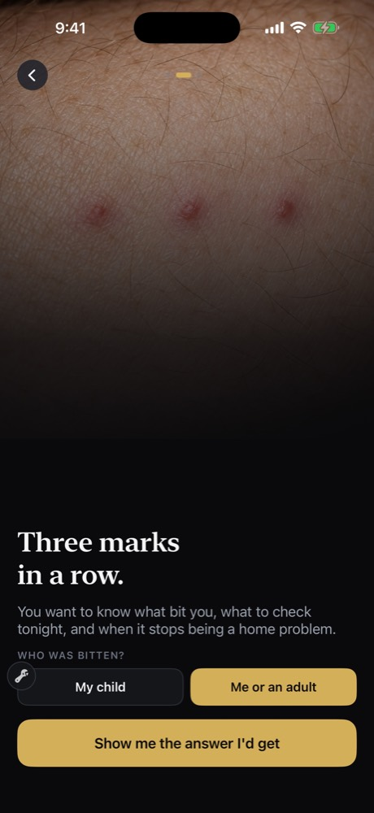
Тема «укус» — единственная с развилкой
Копия экрана · по темам
Жук
Something ran under the counter.
You need two things fast: what it is, and whether there are more behind the cabinets.
Укус · взрослый
Three marks in a row.
You want to know what bit you, what to check tonight, and whether the answer is in your bedroom or outside it.
Укус · ребёнок
Three marks on your kid's arm.
You want to know what bit them, what to do tonight, and what would mean calling the doctor.
Улики
Mud tubes on the foundation.
The bug is gone but the trace is not. What left it decides whether this waits or costs thousands.
Питомец
Something dug in under the fur.
Ticks and fleas are a clock, not a question. What it is decides what you do in the next 72 hours.
Развилка (только укус)
WHO WAS BITTEN? → My child · Me or an adult
Кнопка
Show me the answer I'd get
Что экран обязан сделать
Подтвердить «это про меня» до того, как появится цена.
Развести взрослый и детский путь у укуса: меняется фотография, текст, проверки в плане и буллеты пейвола.
Чем подтверждено — и чем опровергнуто
Раздельные картинки подтверждены: детская рука у родителя 0.71, взрослая рука 0.36 и шов матраса 0.35 у арендатора, собака с клещом 0.98 у владельца питомца.
Сам экран не подтверждён ничем. В списке «что обязательно увидеть до цены» его содержимое не набрало ничего: свой результат 0.61, шаги 0.14, пример 0.11 — а «скорость», «4 режима», «отзывы» и прочая подводка — 0.00.
Fable сказал удалить этот экран. Mark: «Плитка уже сказала „я нашёл жука“… идите от плитки сразу к примеру результата. Тогда фраза „вот и вся настройка“ станет правдой». Sarah читает его текст как написанный для кого-то другого. Решение принято, но в коде экран пока остался (OnboardingContainer.swift, шаг .pain): на нём висит тап «ребёнок или взрослый», который надо куда-то перенести. Это открытый вопрос к владельцу №2 в справочнике.
Расхождение со скриншотом. На кадре у темы «укус» ещё старая строка «…and when it stops being a home problem» — Jordan прочитал её как написанную для домовладельца. В коде она уже переписана.
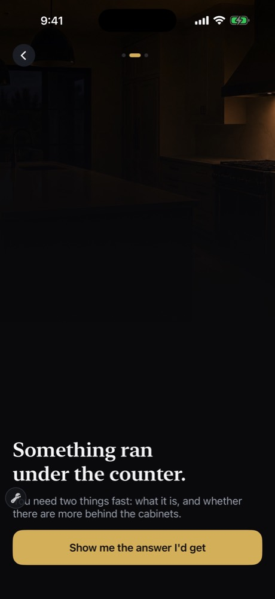
Жук. Ночная кухня. Mark: «настолько недоэкспонирована, что читается как сломанная» → ассет перегенерирован.Укус. Три следа + развилка «ребёнок / взрослый».
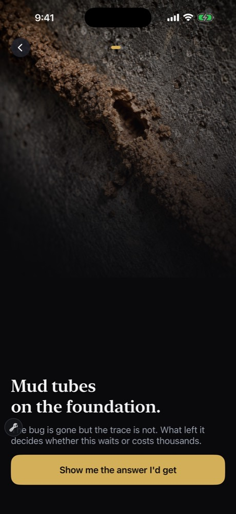
Улики. «Что оставило след — решает, ждёт это или стоит тысячи».
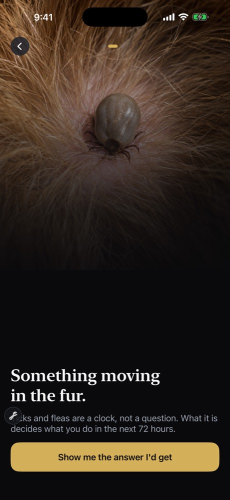
Питомец. Единственная тема, где речь сразу о часах, а не о виде.
ЭКРАН 3
Пример результата — «вот что вернёт ваш скан»
Тот же макет, что у настоящего результата в приложении, честно помеченный как пример. Здесь же, строкой внутри результата, живёт чат — не отдельным экраном и не персонажем.
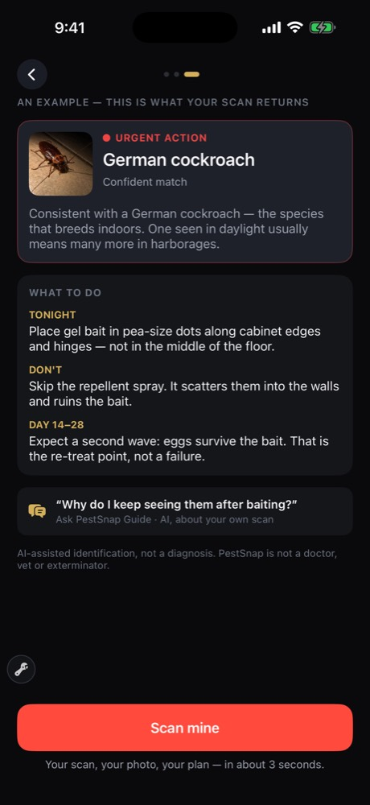
Тема «жук» · 🔴 URGENT ACTION
Копия экрана
Эйбрау
AN EXAMPLE — THIS IS WHAT YOUR SCAN RETURNS
Карточка вердикта
German cockroach
🔴 URGENT ACTION · Confident match
Consistent with a German cockroach — the species that breeds indoors. One seen at all usually means many more in harborages you can't see.
WHAT TO DO
Tonight — Place gel bait in pea-size dots along cabinet edges and hinges — not in the middle of the floor.
Don't — Skip the repellent spray. It scatters them into the walls and ruins the bait.
Check now · 2 min — Torch under the sink and behind the fridge. Pepper-like specks or a musty smell mean a colony, not a stray.
Day 14–28 — Expect a second wave: eggs survive the bait. That is the re-treat point, not a failure.
Чат
«Why do I keep seeing them after baiting?» — Ask PestSnap Guide · AI, about your own scan
Дисклеймер
AI-assisted identification, not a diagnosis. PestSnap is not a doctor, vet or exterminator.
Кнопка
Scan mine · Your scan, your photo, your plan — in about 3 seconds.
Что экран обязан сделать
Показать продукт, а не обещание. Не «мы определяем за 3 секунды», а конкретный вердикт с конкретным планом.
Быть честным трижды: полоса уверенности вместо выдуманного процента, «consistent with» вместо «is», дисклеймер и экстренная строка не за оплатой.
Побить Reddit специфичностью: класс средства, куда именно класть, какая ошибка всё портит, через сколько ждать результат.
Чем подтверждено
«Увидеть результат до цены» — 0.61, первое место с большим отрывом.
Чат внутри результата, как вопрос про этого вредителя, — 0.61; именованный «Dr.» — 0.06, худший вариант.
Fable: лучший экран приложения. Mark — «первое приложение про жуков, которое сказало мне, что делать»; Sarah — «„позвоните врачу сегодня“ за десять секунд сделало то, ради чего я скачала приложение».
Что изменилось после Fable. «One seen in daylight» → «one seen at all» (Mark увидел жука в 23:47, и прежняя формулировка была для него просто неверной). Добавлен шаг «Check now · 2 min» — он просил, чтобы вопрос заселения был проверкой, которую он сделает сам за две минуты. У детского пути проверки матраса заменены на уличные: одежда, обувь, линия травы.
Осознанная честность у темы «укус». «Ни приложение, ни врач не может определить укус по одной фотографии». Jordan: «любой, кто по фото обещает 100% клопов, врёт, чтобы мне что-то продать» — то есть эта фраза повышает доверие. Она же — требование compliance: список «звонить врачу сегодня» жёстко зашит в код и никогда не генерируется моделью.
Укус. 🟡 Monitor · Narrowed to a group. Пять мест сегодня, фото через 48 часов, признаки «к врачу» + красная строка Poison Control 1-800-222-1222 · 911.
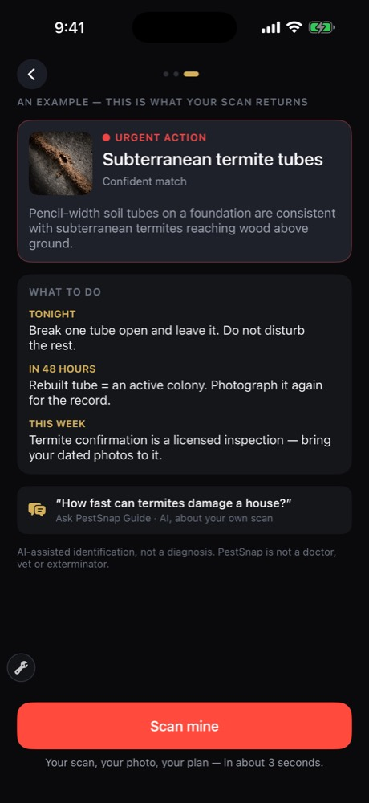
Улики. 🔴 Urgent. Сломать одну трубку → через 48 часов восстановлена = активная колония → датированные фото для лицензированной инспекции.
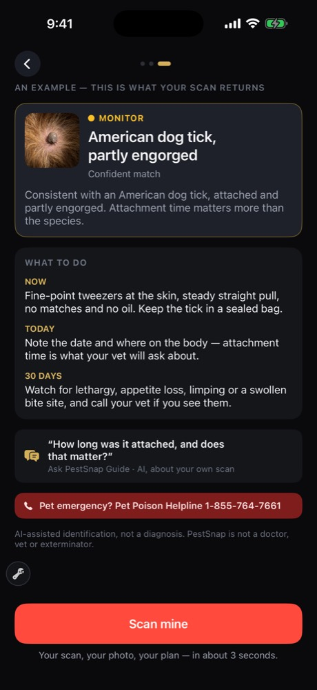
Питомец. 🟡 Monitor. Вид + степень набухания ≈ 24–48 часов на коже; пинцет у самой кожи, дата и место на теле, 30 дней наблюдения.
ЭКРАН 4
Пейвол по теме
Один экран с закреплённым низом. Порядок блоков: карточка результата → заголовок → три буллета → строка цены → Weekly → Yearly → кнопка → строка спокойствия → правовые ссылки.
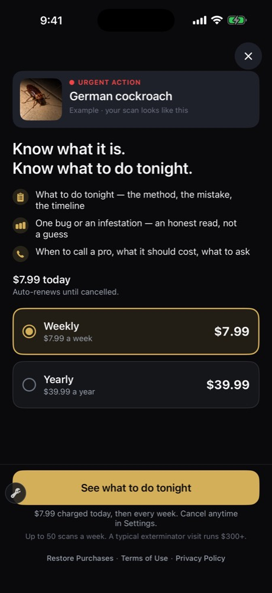
Снято без права на триал → «$7.99 today»
Копия экрана · тема «жук»
Герой
🔴 URGENT ACTION · German cockroach · Example · your scan looks like this
Заголовок
Know what it is. Know what to do tonight.
Буллеты (текущая редакция в коде)
· Scan your own bug — your photo, named, with how sure we are
· One stray or a colony: the two-minute check that tells you which
· When to call a pro, what it should cost, and what to ask so you aren't upsold
Цена
$0.00 today — при подтверждённом праве на триал; иначе «$7.99 today · Auto-renews until cancelled.»
Weekly $7.99 a week (предвыбран, бейдж «7 DAYS FREE» только при праве) · Yearly $39.99 a year, без бейджа
Кнопка
See what to do tonight (у темы «питомец» — See what to do now)
Под кнопкой
No charge today. Cancel anytime in Settings. — либо честное «$7.99 charged today, then every week.»
Мелким
If a photo can't be read, it doesn't use up a scan. Fair-use limit 50 scans a week.
Restore Purchases · Terms of Use · Privacy Policy
Что экран обязан сделать
Продавать то, что за стеной, а не повторять предыдущий экран: разбор её собственного фото, датированную запись, наблюдение.
Не врать ни одной строкой. Слово «free» появляется только когда RevenueCat подтвердил право на триал; лимит сканов назван одной цифрой; никаких «unlimited».
Первым буллетом бить в боль когорты, а не в общий список возможностей.
Чем подтверждено
Решение
Число
Что проиграло
Карточка результата вместо стокового героя
0.70
Фото желаемого результата 0.02 — именно таким был герой 1.8
Первый буллет = боль когорты
0.32–0.57
Чат как буллет 0.00
«$0.00 today» + дата первого списания
0.32
SAVE 90% 0.01 · BEST VALUE 0.01 · «≈$0.77/нед» 0.13
CTA-глагол
0.52
«Continue» 0.03 — кнопка 1.8
«No charge today. Cancel anytime in Settings.»
0.60
Напоминание за 2 дня 0.02
Где мы сознательно не взяли победителя. Зачёркнутые $300 выиграли блок цены (0.36 против 0.32 у «$0.00 today»), но доверие к ним — 2.21–2.37 из 5, и голос compliance назвал это недоказанным утверждением об экономии. Оставили одну серую строку сравнения — и только у тем «жук» и «улики»: Jordan прямо сказал, что «$300 за визит — счёт домовладельца, а не арендатора», а Sarah — что это вообще не тот счёт, когда решаешь про приёмный покой. На скриншотах строка ещё стоит у всех четырёх тем — это и есть та правка, что сделана после съёмки.
Что тестеры назвали ловушкой. Недельная подписка, выбранная по умолчанию, со списанием сегодня. Sarah: «я забуду отменить и буду в бешенстве». Dave: «сделать дорогой вариант выбранным по умолчанию — это то, из-за чего я перестаю доверять всему, что написано выше». Ответ — 7-дневный триал, уже утверждённый владельцем; в ASC его нужно создать заново.
Жук. «Know what it is. Know what to do tonight.»
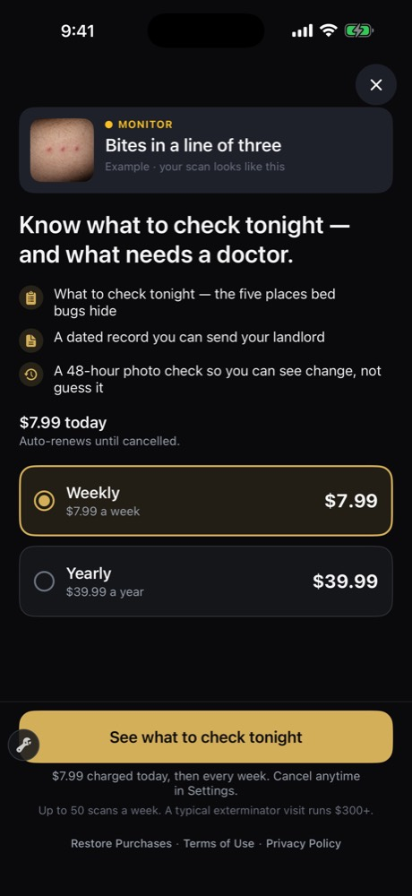
Укус. «Know what to check tonight — and what needs a doctor.» У взрослого пути второй буллет — датированная запись для хозяина квартиры (0.57 у арендатора).
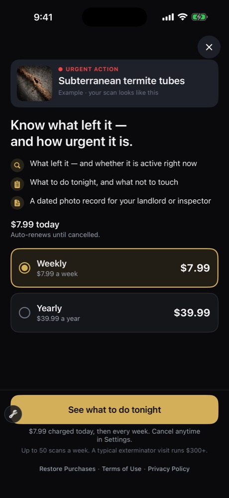
Улики. «Know what left it — and how urgent it is.» 48-часовой тест «активно или старое».
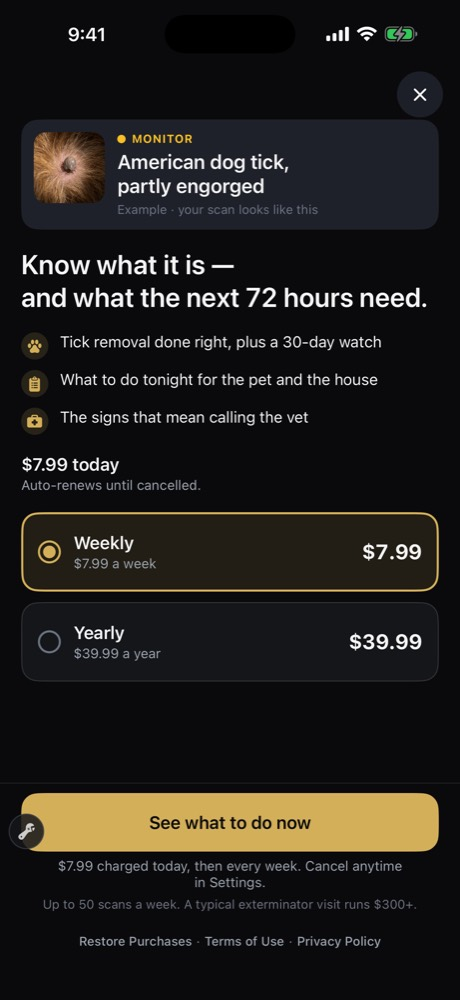
Питомец. «Know what it is — and what the next 72 hours need.» Журнал по питомцу и 30 дней наблюдения — то, за что Dave готов платить весь сезон.
ЭКРАН 5
После оплаты — самое слабое место потока
Здесь V2 заканчивается и начинается приложение 1.8: дисклеймер с галочкой, а за ним главная, которая не знает, зачем человек пришёл.
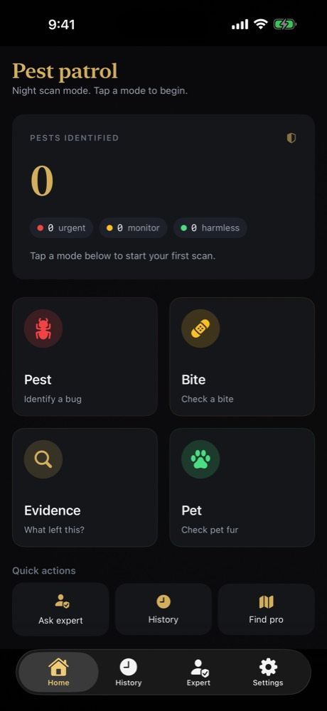
Главная 1.8 — в V2 не менялась
Копия экрана согласия
Заголовок
Before you scan
A quick note so we're on the same page.
Четыре строки
Educational tool — Scans help you identify. They don't diagnose.
Not medical or veterinary advice — For severe reactions — or anything affecting a pet — contact a doctor or vet.
Confirm infestations with a pro — For termites, roaches, or anything with a colony, a licensed exterminator is the right next step.
Emergency — Poison Control 1-800-222-1222 · 911
Галочка и кнопка
I understand and agree to the Terms & Privacy → Start scanning →
Что этот участок обязан делать — и не делает
Должен: открыть камеру сразу на выбранной теме, довести до её собственного результата за ≤ 60 секунд и открыть дело с датами контроля.
Делает: показывает «Pest patrol», счётчик «PESTS IDENTIFIED 0» и четыре равные плитки — ровно тот экран, который человек видел в 1.8. Тема, выбранная на первом экране, до камеры не доходит.
Следствие: оплата произошла, ценность ещё нет. Именно в этом промежутке живёт «отменю в понедельник» из всех четырёх интервью Fable.
Отдельного кадра экрана «Before you scan» в этом раунде нет — он не снимался. Копия выше взята дословно из PostPurchaseWelcomeView.swift.
Что утверждено на замену. Навигация Home · My Home · Ask · Settings, плавающая строка скана над таб-баром, карточка «Your case is open» с шагами на сегодня, день 2 и день 7, и карточка-объяснение уведомлений — системный диалог только после «да». Ничего из этого пока не построено.
ДАЛЬШЕ
Чего в потоке ещё нет
Всё построенное продаёт триал. Ничто из построенного не удерживает после него — и это видно в цифрах: «буду платить через 4 недели» = 1 из 5 у всех четырёх тестеров Fable и 1.03–1.32 из 5 у Jev.
Три рычага, утверждённых к постройке
Дело-трекер «ушло ли» с контролем на 2-й и 7-й день — 0.20 на продление. Единственный, который кладёт датированную причину вернуться внутрь 7-дневного триала.
Наблюдение за укусом и клещом — 0.19 (родитель 0.68): повтор фото через 48 часов, 30 дней по клещу, собачьи симптомы, а не человеческие.
Запись дома и PDF — 0.17 (арендатор 0.66). Jordan: «если бы на пейволе показали миниатюру этого документа, моё „куплю сейчас“ стало бы 4».
Что ещё открыто по потоку
Удалять ли экран 2 и куда переносить тап «ребёнок или взрослый».
Настоящий скан до цены (0.72 против 0.14 у примера) — это отменяет правило «0 бесплатных сканов».
Триал в App Store Connect — пока не создан, поэтому пейвол честно пишет «$7.99 today».
Строка «Fair-use limit 50 scans a week» — Sarah читает её как «это приложение не для меня», но убрать цифру нельзя.
Подробности и полный список решений — в справочнике, раздел «Открытые решения владельцу».
Кадры: research/flow-v2-2026-09-20/ (плитки, ситуация, пример, пейвол ×4 темы) и research/verify-2026-09-19/ (главная, отладочная панель, пейвол 1.8, перегенерированные плитки). Копия экранов — дословно из TopicContent.swift, TopicTilesScreen.swift, TopicPainScreen.swift, ExampleResultScreen.swift, PaywallV2View.swift, PostPurchaseWelcomeView.swift. Числа — research/*-jev-2026-09-19/FINDINGS.md и research/fable-r1-2026-09-20/FINDINGS.md.